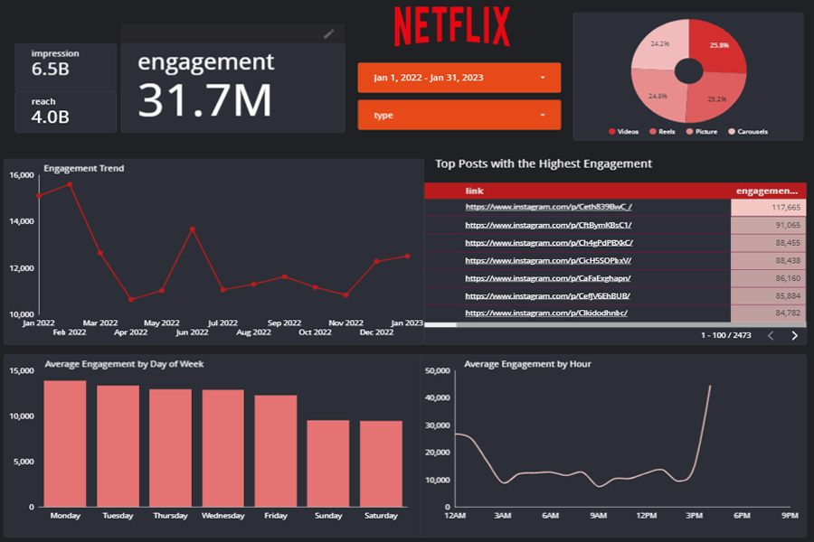

Netflix ID Instagram - Social Media Analytic
Understanding Analytic with Looker Studio
Introduction:
In today's digital age, social media platforms play a crucial role in shaping consumer preferences and driving engagement. With the massive popularity of Netflix and the netflix_id Instagram account serving as a hub for discussions, recommendations, and promotions, analyzing the engagement metrics provides valuable insights into audience preferences, content trends, and effective marketing strategies in the dynamic landscape of streaming entertainment. About the dataset, it consists key feature such as type of posts, date, reach, impression and engagement.
Case Study Scenario:
Assume the Netflix marketing team wants to understand the performance of their social media content from January 2022 to February 2023. This data dashboard aims to reveal key insights to optimize future campaigns and maximize audience engagement.
Insight:
1. Executive Summary,
The content has a substantial reach, with over 6.5 billion impressions and reaching 4 billion people. However, despite the high reach, the engagement is comparatively low, with only 31.7 million engagements. This could indicate that while the content is reaching a vast audience, it may not be resonating deeply with them. While for post format, the focus distribution of post types indicates a relatively balanced approach.
2. Engagement Trend,
The engagement trend shows peaks and valleys over time. Peaks in February 2022 and July 2022 suggest periods of particularly high engagement, while the decline in March 2022 and slight decrease towards the end of 2022 indicate periods of lower engagement. The rise in January 2023 suggests a potential recovery or renewed interest.
3. Top Posts,
Analyzing the context or thematic of top posts is necessary, allowing for the replication of successful strategies in future content planning. For example, some of top posts are using "meme" style.
4. Day of Week
Monday shows the highest average engagement, indicating that the audience may be more active at the beginning of the week, potentially due to returning to work or school after the weekend. Engagement appears to be lower and may receive less attention on Saturdays and Sundays, probably because user spend more time with other activities on the weekend.
5. Peak Hour
Engagement peaks at 4 PM suggesting the highest engagement. This also suggests that the audience is most active during these hours, possibly during breaks/going home from work. The data also suggests that engagement during working hours is generally low obviously.
Additionally, two key filters for date and type are available for specific searches.